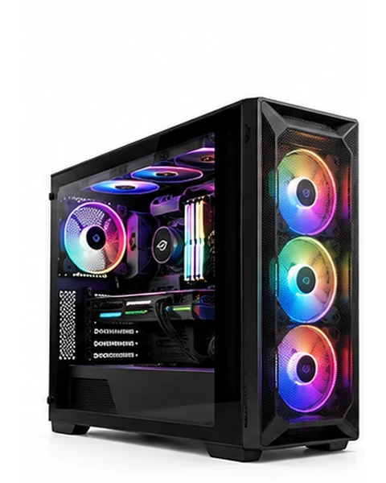
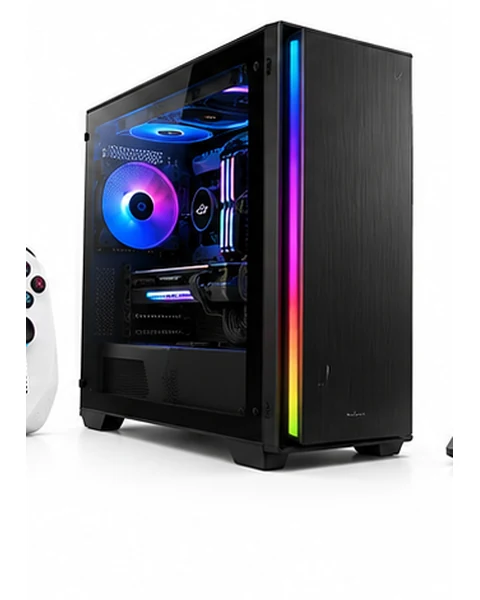

ゲーミングPC 売れ筋ランキング
デスクトップ型PC10選。GPU・CPU・メモリを比較して選ぶ。
✦ BUYING GUIDE ✦ まず確認したい3つのポイント
失敗しないゲーミングPCの選び方
CPU・GPU・メモリの数字だけでなく、遊ぶゲーム・冷却・将来の増設まで確認してから選びましょう。
PR ・ 画像：ASUS公式掲載「TUF Gaming T500」。OZ GAMINGの取扱商品を示すものではありません。 価格や販売条件は移動先でご確認ください。ゲーミングPC 売れ筋ランキング TOP10
順位について：こちらは売れ筋製品を比較するための当サイト独自の掲載順です。Amazonの販売台数ランキングやベストセラー順位を示すものではありません。レビュー評価・スペック・在庫状況を確認して掲載しています。


Amazon星評価・件数は2026年11月2日に確認した参考情報です。最新のレビューは各商品ページで確認してください。※掲載順は当サイトの比較順であり、Amazonの売上順位とは異なります。
購入前にチェックする3つのポイント
- GPUと遊ぶ解像度フルHD・WQHD・4Kと目標fpsからGPUを選ぶ。GPU名だけでなくVRAM容量も確認。
- CPU・メモリCPUの世代・性能、16GB/32GBなど用途に合うメモリ容量を確認。
- 冷却・電源・保証ケースのエアフロー、電源容量、部品増設の可否、保証期間まで比較。
価格を見比べる際の注意：※ 掲載中のAmazonリンク先の商品と「国内別モデルの参考価格」は別商品です。モデル・CPU・GPU・ストレージなどの差があります。各カードの価格種類と出典をご確認ください。購入金額は必ずリンク先で再確認してください。
このカテゴリで比較できる提携先
GAMING DESKTOP
OZ GAMING
ゲーミングPC・BTOパソコン

BTOゲーミングPCの価格・構成を確認。
公式情報・価格を確認する →REFURBISHED PC
Qualit
中古・整備済みパソコン

保証条件を確認しながら中古PCを比較。
公式情報・価格を確認する →